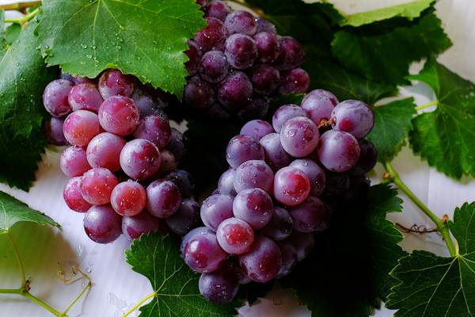
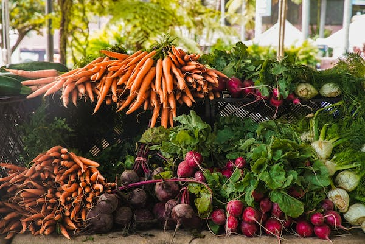
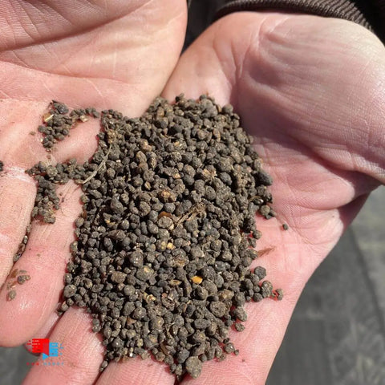

About
Welcome to Sunrise Acres
At Sunrise Acres, we cultivate more than just crops; we cultivate a commitment to sustainable agriculture, quality produce, and a connection to the land. Nestled in the heart of Coimbatore, our farm is a testament to the age-old art of farming combined with modern practices to bring you the finest and freshest produce.
Our Story
Founded 2024, Sunrise Acres has deep roots in the rich soil of Coimbatore. What started as a small family endeavor has blossomed into a thriving agricultural venture dedicated to providing the community with nourishing, locally grown products.
Sustainable Practices
We are passionate about sustainable farming practices that not only preserve the environment but also enhance the nutritional value of our produce. From organic fertilizers to water conservation techniques, we prioritize the well-being of the land and the health of our community.
Our Products
Explore our diverse range of farm-fresh products, meticulously grown and harvested at the peak of ripeness. From vibrant fruits and vegetables to aromatic herbs and specialty crops, each item is a testament to the care and dedication we put into our craft. Discover the flavors of Sunrise Farming on your plate.
Fruits
Discover nature's sweet treasures at Sunrise Acres. We bring you a delightful assortment of fresh, ripe fruits, carefully cultivated for taste and quality. From juicy berries to crisp apples and exotic tropical delights, our fruits are a celebration of natural goodness. Join us in savoring the simplicity and wholesomeness of farm-fresh fruits, straight from our orchards to your table. Taste the difference with Sunrise Acres.
Vegetables
At Sunrise Acres, we celebrate the crisp and vibrant world of vegetables. Explore our garden-fresh selection, carefully harvested for peak flavor and nutritional value. From leafy greens to colorful bell peppers and root vegetables, our produce is a testament to the goodness of the earth. Join us in embracing the simplicity and goodness of farm-to-table living. Experience the freshness with every bite, only at Sunrise Acres.
Dairy Products

Indulge in the wholesome goodness of dairy at Sunrise Acres. Our dairy products are a testament to quality, freshness, and a commitment to traditional craftsmanship. From creamy milk to rich cheeses and velvety yogurts, each product is crafted with care, straight from our farm to your table. Join us in savoring the simplicity and richness of farm-fresh dairy. Taste the difference with Sunrise Acres.
Organic Fertilizers
At Sunrise Acres, we believe in nurturing the soil naturally. Our organic fertilizers are a harmonious blend of nature's best, designed to enrich your soil and cultivate healthier, more vibrant plants. Free from synthetic chemicals, our fertilizers promote sustainable agriculture, supporting both the environment and your garden's vitality. Join us in growing greener with Sunrise Acres.